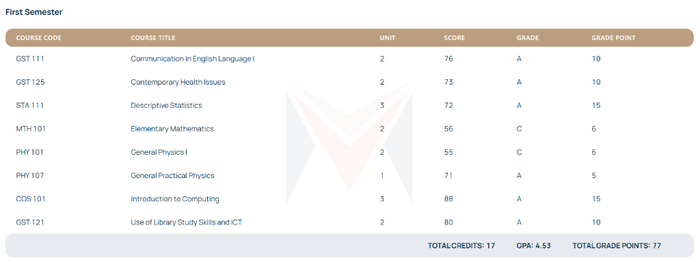

About Joseph Aretola
Discover my academic journey, software engineering specializations, career ambitions, and personal passions.
Who I Am
I am a dedicated Software Engineering student and a seasoned software engineer based in Lagos, Nigeria. Over the past 5+ years, I have specialized in building robust, cross-platform mobile and web applications across diverse industries including fintech, banking, travel tech, and ride-hailing.
As a scholar at Miva Open University studying Software Engineering, including COS 106 (Introduction to Web Technologies), I have expanded my foundational knowledge into standard web architectures: semantic document outlines, responsive styling with Flexbox and CSS Grid, accessible form validation, and interactive JavaScript state management.
I take pride in translating complex user requirements into elegant, reliable digital products. From leading technical teams at the Ogun Digital Summit (ODS) for over 5 consecutive years to engineering enterprise banking platforms for Polaris Bank Ltd., I am committed to clean code, test-driven development (TDD), and user-centric design.
Educational Background & Coursework
A comprehensive breakdown of degree qualifications, academic milestones, and semester coursework performance.
Bachelor of Science (B.Sc.) in Software Engineering
Miva Open University
Faculty of Science & Technology • Nigeria
Core curriculum covers Web Technologies, Data Structures & Algorithms, Object-Oriented Software Design, Relational Database Systems, Operating Systems, Computer Architecture, and Discrete Mathematics.
Semester Course Record & Academic Performance
Official Miva Open University transcript — First Semester results with scores, grades, and grade points:
| Course Code | Course Title | Unit | Score | Grade | Grade Point |
|---|---|---|---|---|---|
| GST 111 | Communication in English Language I | 2 | 76 | A | 10 |
| GST 125 | Contemporary Health Issues | 2 | 73 | A | 10 |
| STA 111 | Descriptive Statistics | 3 | 72 | A | 15 |
| MTH 101 | Elementary Mathematics | 2 | 56 | C | 6 |
| PHY 101 | General Physics I | 2 | 55 | C | 6 |
| PHY 107 | General Practical Physics | 1 | 71 | A | 5 |
| COS 101 | Introduction to Computing | 3 | 88 | A | 15 |
| GST 121 | Use of Library Study Skills and ICT | 2 | 80 | A | 10 |
| First Semester Standing | Total Credits: 17 | GPA: 4.53 | Total Grade Points: 77 | ||

Technical Skills & Proficiencies
A comprehensive overview of my programming languages, frameworks, architecture paradigms, and development tools.
Mobile & Cross-Platform
Databases & Developer Tools
Career Aspirations & Academic Roadmap
My strategic path toward software leadership, advanced computing research, and impactful technology solutions.
My overarching aspiration is to operate at the intersection of full-stack web engineering and scalable distributed systems. Having architected fintech and enterprise mobile platforms, my target is to lead engineering teams that solve critical financial inclusion, educational technology, and productivity challenges across Africa and globally.
Chronological Career Milestones
-
Graduate with First-Class Honors in Software Engineering
Complete my B.Sc. with distinguished academic standing, mastering fundamental computing principles, computational theory, and advanced software development methodologies.
-
Deepen Full-Stack Web & Cloud Architecture
Expand upon frontend web frameworks (React/Next.js) and microservices architecture with Node.js, Go, and Docker containerization to deliver high-availability distributed systems.
-
Lead Enterprise Engineering Initiatives in African FinTech
Scale payment infrastructures and seamless cross-border financial rails that serve millions of merchants and underbanked communities across emerging markets.
-
Mentor & Empower the Next Generation of Engineers
Expand community-driven technical summits like the Ogun Digital Summit, establishing tech incubation programs, open-source workshops, and student mentorship labs.
Hobbies & Personal Interests
Activities that inspire creativity, strategic thinking, and balanced personal wellness beyond code.
Community Volunteering
Lead developer for Ogun Digital Summit (6,000+ attendees).
Chess & Strategy
Analyzing tactical endgames and combinatorial problem solving.
Technical Writing
Authoring articles on clean architecture, state management, and TDD.
Digital Photography
Capturing urban street life, tech conference moments, and visual symmetry.
Tech Podcasts & Audiobooks
Exploring software engineering radio and startup architecture stories.
Fitness & Table Tennis
Staying physically active through cardio running and fast-paced table tennis.